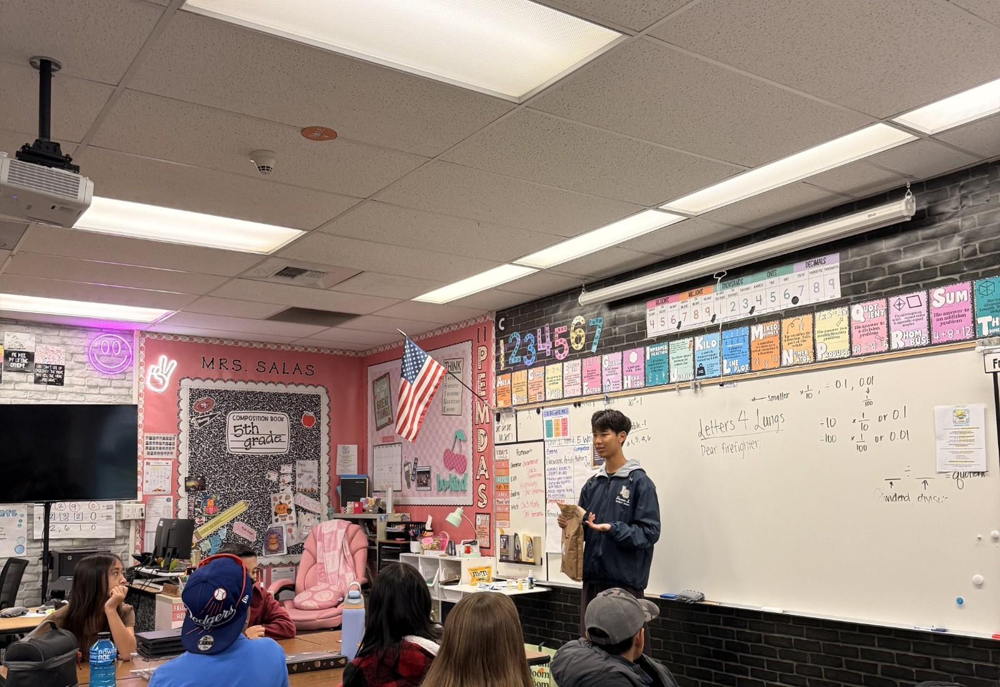

Rewriting the Prognosis: How CFTR Modulators Are Transforming Cystic Fibrosis Care
A Genetic Lung Disease Enters a New Treatment Era

Cystic fibrosis is a genetic disease that affects approximately 70,000 people worldwide, causing thick, sticky mucus to build up in the lungs and other organs. For most of its history, treatment for cystic fibrosis focused on managing symptoms and complications rather than the disease's root cause. Over the past decade, however, a new class of drugs called CFTR modulators has fundamentally changed the outlook for many patients, making cystic fibrosis one of the clearest examples of how targeted genetic therapy can transform a once-devastating diagnosis.
Background and Mechanism
Cystic fibrosis is caused by mutations in the CFTR gene, which normally produces a protein that regulates the movement of salt and water across cell membranes. When this protein is missing or malfunctioning, mucus in the lungs and other organs becomes abnormally thick and sticky, creating an environment where bacteria thrive and airways become chronically obstructed and inflamed. Over time, repeated infections and inflammation cause progressive lung damage, and until recently, most treatment approaches, such as airway clearance techniques and antibiotics, addressed the downstream effects of the disease rather than the defective protein itself.
The CFTR Modulator Breakthrough
CFTR modulators represent the first class of drugs designed to correct the underlying defect in cystic fibrosis rather than simply manage its symptoms. Ivacaftor, approved in 2012, was the first CFTR modulator and works for patients with specific gating mutations. Since then, combination therapies have expanded treatment to cover far more of the CF population. The triple combination therapy elexacaftor, tezacaftor, and ivacaftor, marketed as Trikafta, is now eligible for use in more than 90 percent of people with cystic fibrosis and has been associated with dramatic improvements in lung function, sharp reductions in pulmonary exacerbations, and a reduced need for lung transplantation. In 2025, regulators in Europe expanded eligibility for this therapy to include all patients aged two and older with at least one qualifying mutation, broadening access even further.
Newer options continue to emerge. A once-daily combination called vanzacaftor, tezacaftor, and deutivacaftor was approved in 2024 in the United States and 2025 in Europe, offering similar effectiveness with a more convenient dosing schedule. Registry-based studies tracking real-world patient outcomes have confirmed that these modulator therapies lead to sustained improvements in lung function and reduced hospitalizations across diverse patient populations.
Remaining Challenges
Despite this progress, CFTR modulators are not a cure, and researchers note that irreversible airway damage accumulated before starting treatment may limit how much lung function these drugs can restore. Not all CF-causing mutations respond to currently available modulators, meaning a portion of patients still lack access to a therapy that targets their specific genetic defect. Cost and access also remain significant barriers in many parts of the world, raising ongoing questions about health equity even as treatment options expand.
Conclusion
The development of CFTR modulators marks one of the most significant advances in cystic fibrosis care in decades, shifting treatment from symptom management toward correcting the disease's underlying genetic cause. With expanding eligibility, improving formulations, and growing real-world evidence of long-term benefit, the outlook for many people with cystic fibrosis has changed dramatically, though continued research is needed to reach the patients whose mutations remain untreatable and to address the lung damage that occurred before modulator therapy became available.
References
- Advances in cystic fibrosis: CFTR modulator triple combinations. (2025). European Respiratory Journal. https://publications.ersnet.org/content/erj/67/1/2501783
- Claire's Place Foundation. (2025, September). Cystic fibrosis treatments: Your complete guide to every available option in 2025. https://clairesplacefoundation.org/posts/2025/9/cystic-fibrosis-treatments-your-complete-guide-to-every-available-option-in-2025
- Cystic fibrosis: New challenges and perspectives beyond CFTR modulators. (2025). Therapeutic Advances in Respiratory Disease. https://journals.sagepub.com/doi/10.1177/17534666251323194
- Efficacy and safety of elexacaftor-tezacaftor-ivacaftor in the treatment of cystic fibrosis: A systematic review. (2023). PMC. https://www.ncbi.nlm.nih.gov/pmc/articles/PMC10047761/
- Keeping up with CFTR modulator eligibility. (2025). ScienceDirect. https://www.sciencedirect.com/science/article/pii/S1526054226000242
- Salvatore, D., & Pepe, A. (2025). Cystic fibrosis transmembrane conductance regulator modulators in cystic fibrosis: A review of registry-based evidence. Journal of Clinical Medicine, 14(11), 3978. https://www.ncbi.nlm.nih.gov/pmc/articles/PMC12155698/
- Stone, A., Haag, M. B., Muirhead, C. A., Markwardt, S., & MacDonald, K. D. (2025). The effect of modulators on lung function following inpatient treatment for CF exacerbations. Frontiers in Pediatrics, 13, Article 1654122. https://www.ncbi.nlm.nih.gov/pmc/articles/PMC12408314/

Start a Chapter or Support Our Work
Start one at your school, fund the next delivery, or bring Project Pulmonary to your department.
Project Pulmonary is a 501(c)(3). Every gift is tax-deductible.